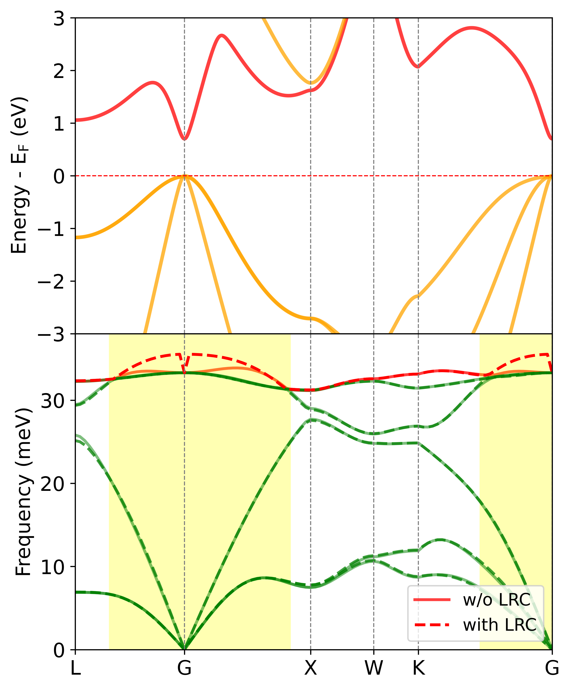
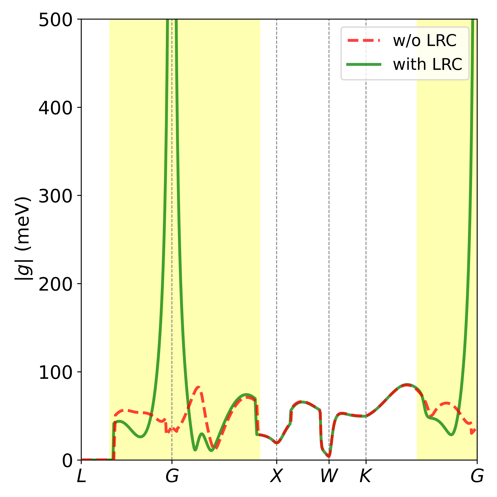

EPC Path Calculation
This tutorial uses cal_mode: epc in QTrans to calculate
electron-phonon coupling (EPC) matrix elements along a high-symmetry path.
EPC path of GaAs
This tutorial illustrates the calculation of the EPC matrix elements of the polar semiconductor GaAs using QTrans with and without long-range correction (LRC).
The GaAs tutorial is located in tutorials/GaAs/openmx/epc-disp/.
All necessary data files are available in tutorials/GaAs/openmx/data/.
The directory contains calculations with and without LRC:
cd tutorials/GaAs/openmx/epc-disp/ && ls
with-LRC/ without-LRC/
1. Without LRC
First, calculate the EPC matrix elements without LRC.
Enter without-LRC/, where you will find the input file input-epc-noLRC.yaml and
the ref/ folder containing reference outputs:
cd without-LRC/ && ls
input-epc-noLRC.yaml ref/
In the input file input-epc-noLRC.yaml, we set cal_mode: 'epc' to compute the EPC matrix elements,
and enable the use of a sparse gradient matrix (read_sparse_grad_mat: True) to accelerate the calculation.
The correction is deactivated by setting apply_correction: False.
Instead of computing all EPC matrix elements, we focus on a specific process: the EPC matrix elements \(\left| g_{\mu\nu b}(\mathbf{k},\mathbf{q}) \right|\) between an initial electronic state \(\varepsilon_{\nu\mathbf{k}}\) at a fixed wavevector \(\mathbf{k}\) in band \(\mathbf{\nu}\), and a final state \(\varepsilon_{\mu\mathbf{k+q}}\) in band \(\mathbf{\mu}\), with a phonon of branch \(b\), evaluated as a function of the phonon wavevector \(\mathbf{q}\).
In this case, we choose the electronic state at the Gamma point in the fifteenth band (\(\mathbf{\nu}\) = 15) as the initial state,
and choose the final state also in the fifteenth band (\(\mathbf{\mu}\) = \(\mathbf{\nu}\) = 15),
by specifying: epc_path_fix_k: [0.0,0.0,0.0] and dispersion_select_index: '15,15'.
The q-point path L-Gamma-X-W-K-Gamma is specified manually using high_symmetry_points and high_symmetry_labels.
Alternatively, one can use the automatically generated high-symmetry path.
The electronic band structures of GaAs are shown in Figure 1, where the selected band is highlighted in red.
The band structures can be obtained using
cal_mode: 'band'; see the Dispersion of Quasiparticle section
for more information.


Figure 1: (Top) The calculated electronic band structure of GaAs, with the lowest conduction band highlighted in red. The Fermi level is aligned with the valence band maximum (VBM). (Bottom) The phonon dispersions with LRC (dotted line) and without LRC (solid line). The highest optical mode is highlighted in red. The yellow region indicates where LRC has a significant effect on the phonon dispersions.
The complete input-epc-noLRC.yaml is:
basic:
cal_mode: 'epc'
graph_data_path_uc: ../../data/graph_data.npz
nao_max: 19
Ham_type: openmx
outdir: './'
advanced:
read_sparse_grad_mat: True
phonon:
supercell_matrix: [[3.0, 0.0, 0.0], [0, 3, 0], [0, 0, 3]]
unitcell_filename: ../../data/GaAs-pri.vasp
force_infos_filename: ../../data/FORCE_SETS
apply_correction: False
BECs: [[[2.10569, 0.00000, 0.00000],[0.00000, 2.10569, 0.00000],[0.00000, 0.00000, 2.10569]],[[-2.10569, 0.00000, 0.00000],[0.00000, -2.10569, 0.00000],[0.00000, 0.00000, -2.10569]]]
DL: [[13.355780, 0.000000, 0.000000],[0.000000, 13.355780, 0.000000],[0.000000, 0.000000, 13.355780]]
epc:
grad_mat_path: ../../data/grad_mat_sparse.npy
mat_info_sc_path: ../../data/mat_info_sc.npy
cell_range_cut: [3,3,3]
q_cut: 100.0
dispersion:
high_symmetry_points: [[0.5, 0.5, 0.5],[0.0, 0.0, 0.0],[0.5, 0.0, 0.5],[0.5, 0.25, 0.75],[0.375, 0.375, 0.75],[0.0, 0.0, 0.0]]
high_symmetry_labels: ['L', 'G', 'X', 'W', 'K', 'G']
nks_path: 500
epc_path_fix_k: [0.0, 0.0, 0.0]
dispersion_select_index: '15,15'
Now we are ready to launch the QTrans calculation with:
mpirun -np 8 QTrans_run --config ./input-epc-noLRC.yaml > epc-noLRC.out
The main outputs are epc-ave.dispersion,
dispersions/epc-15-15.dispersion, and high_symmetry_path.dat.
The degeneracy-averaged data in epc-ave.dispersion have the following format:
# q_label: $L$ $G$ $X$ $W$ $K$ $G$
# q_node: 0.0 0.0810640485 0.1746687514 0.2214711028 0.2545653634 0.3538481423
# iq q_path ibranch frequency(meV) |g|(meV) Deform. pot.(eV/Ang)
0 0.00000 1 6.8870757960 0.0035376102 0.0000772320
0 0.00000 2 6.8870757960 0.0035376102 0.0000772320
0 0.00000 3 25.8072060900 109.2715124525 4.6179288411
...
The first two lines give the high-symmetry q-point labels and path positions.
The six columns are the q-point index, distance along the path, phonon branch
index, phonon energy (meV), averaged matrix-element magnitude (meV), and
deformation potential (eV/Angstrom). Branch indices start at 1; the six
branches are listed at each q point. The band-specific file in
dispersions/ provides the selected band-pair dispersion.
Using these data, we plot the calculated EPC matrix elements for the highest optical phonon branch (see Figure 1); the results are shown in Figure 2.
2. With LRC
Next, repeat the calculation with LRC.
Enter with-LRC/, where you will find the input file input-epc-LRC.yaml and
the ref/ folder containing reference outputs:
cd ..
cd with-LRC/ && ls
input-epc-LRC.yaml ref/
Enable LRC with phonon.apply_correction: True. The Born effective
charges (BECs) and dielectric tensor (DL) are supplied in both
configurations, but the correction is applied only in this run.
The dipole-correction cutoff q_cut belongs in the epc block.
The complete input-epc-LRC.yaml is:
basic:
cal_mode: 'epc'
graph_data_path_uc: ../../data/graph_data.npz
nao_max: 19
Ham_type: openmx
outdir: './'
advanced:
read_sparse_grad_mat: True
phonon:
supercell_matrix: [[3.0, 0.0, 0.0], [0, 3, 0], [0, 0, 3]]
unitcell_filename: ../../data/GaAs-pri.vasp
force_infos_filename: ../../data/FORCE_SETS
apply_correction: True
BECs: [[[2.10569, 0.00000, 0.00000],[0.00000, 2.10569, 0.00000],[0.00000, 0.00000, 2.10569]],[[-2.10569, 0.00000, 0.00000],[0.00000, -2.10569, 0.00000],[0.00000, 0.00000, -2.10569]]]
DL: [[13.355780, 0.000000, 0.000000],[0.000000, 13.355780, 0.000000],[0.000000, 0.000000, 13.355780]]
epc:
grad_mat_path: ../../data/grad_mat_sparse.npy
mat_info_sc_path: ../../data/mat_info_sc.npy
cell_range_cut: [3,3,3]
q_cut: 100.0
dispersion:
high_symmetry_points: [[0.5, 0.5, 0.5],[0.0, 0.0, 0.0],[0.5, 0.0, 0.5],[0.5, 0.25, 0.75],[0.375, 0.375, 0.75],[0.0, 0.0, 0.0]]
high_symmetry_labels: ['L', 'G', 'X', 'W', 'K', 'G']
nks_path: 500
epc_path_fix_k: [0.0, 0.0, 0.0]
dispersion_select_index: '15,15'
Launch the QTrans calculation with:
mpirun -np 8 QTrans_run --config ./input-epc-LRC.yaml > epc-LRC.out
Afterwards, we can plot the corrected EPC matrix elements, as shown in Figure 2.


Figure 2: Calculated EPC matrix elements \(\left| g_{\mu\nu b}(\mathbf{k},\mathbf{q}) \right|\) along high-symmetry path at \(\mathbf{k}\) = Gamma, \(\mathbf{\mu}\) = \(\mathbf{\nu}\) being the lowest conduction band, and \(b\) the highest optical mode. The elements are averaged over degenerate states. The red dashed line represents the calculation without LRC, while the green line shows the calculation with LRC. The yellow region indicates where LRC has a significant effect on the phonon dispersions and EPC elements.
We can see that the LRC is important for polar materials, and QTrans successfully describes the singular behavior of the EPC matrix elements as \(\mathbf{q} \rightarrow 0\).
When plotting the sixth (highest-frequency) branch, omit the exact Gamma
points from both the LRC and no-LRC data. The LRC value stored at Gamma is
a zero placeholder and does not represent the directional limit as
\(\mathbf{q} \rightarrow 0\). Mask these points with NaN or split the
curve into segments so that a line is not drawn across Gamma.